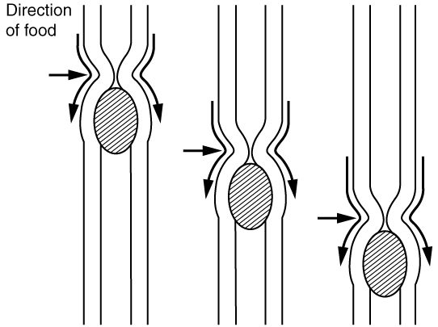
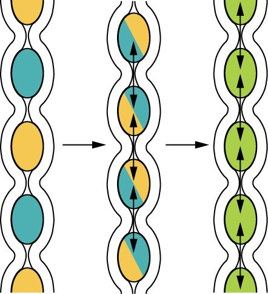
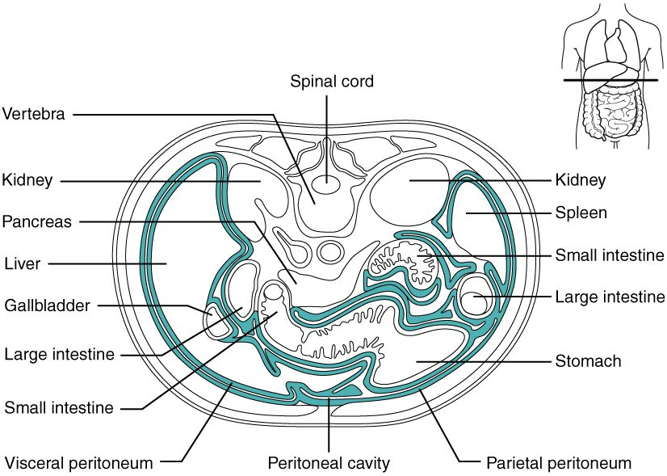

Everything you eat has to be broken into molecules small enough to cross a cell membrane before your body can use it. This page is an overview of the digestive system organs and processes that do that job: the long tube food travels through and the organs that pour secretions into it, the six processes that turn a meal into absorbed nutrients, the four layers that every part of the tube is built from, the two ways its muscle moves, and the nerves and hormones that control it. The topics after this one walk down the tube one organ at a time.
One tube and the organs that serve it
Picture a bite of a cheese sandwich. It enters your mouth, passes through your throat and down your chest, spends a few hours in your stomach, then several more working its way through many meters of intestine. What is left leaves your body at the anus. That route is one continuous tube, the alimentary canal (aliment- = nourishment), also called the gastrointestinal tract or GI tract (gastr- = stomach, intestin- = gut). Its parts, in order (Figure 1):
- the mouth
- the pharynx, the throat you met with the airway
- the esophagus, a muscular tube through the chest
- the stomach, a stretchy pouch under the left ribs
- the small intestine, a narrow coiled tube a few meters long, where most digestion and absorption happen
- the large intestine, a wider, shorter tube that frames the small intestine and ends at the anus
The small intestine is "small" because of its width, about 2.5 cm, not its length. The large intestine is wider but much shorter.
The accessory digestive organs help from outside the tube. Food never passes through them. The teeth and tongue work inside the mouth. The glands that make saliva, the liver (which makes bile), the gallbladder (which stores bile) and the pancreas (which makes digestive enzymes) send their secretions into the tube through ducts.

One idea makes the rest of the chapter easier. The space inside the tube, its lumen, is open to the outside world at both ends. Food in your stomach is, strictly speaking, still outside your body, in the same way the hole of a doughnut is outside the doughnut. A nutrient only enters your body when it crosses the lining into your blood or lymph. That crossing is called absorption.
Six digestive processes
Follow the sandwich again and name what happens to it at each stage. Every step belongs to one of six digestive processes:
- Ingestion (in- = into, gest- = carry): taking food into the mouth.
- Propulsion (pro- = forward, puls- = push): moving food along the tube. Swallowing starts it, and waves of muscle contraction carry it the rest of the way.
- Mechanical digestion: breaking food into smaller pieces and mixing it with secretions, without changing its molecules. Chewing, the churning of the stomach and the back-and-forth mixing in the small intestine are all mechanical digestion.
- Chemical digestion: enzymes splitting large food molecules into their building blocks by hydrolysis. Starch becomes glucose, proteins become amino acids, and triglycerides become fatty acids and smaller pieces.
- Absorption: moving those building blocks, plus water, vitamins and minerals, from the lumen across the lining into blood or lymph. Most of it happens in the small intestine.
- Defecation (de- = away, fec- = dregs): expelling what was not digested or absorbed, as feces, through the anus.
Mechanical and chemical digestion are easy to mix up, so here they are side by side.
| Mechanical digestion | Chemical digestion | |
|---|---|---|
| What changes | The size of the pieces; the molecules stay the same | The molecules themselves: bonds are broken |
| What does it | Teeth, tongue and the smooth muscle of the tube wall | Enzymes, working by hydrolysis |
| Where | Mouth, stomach and small intestine | Starts in the mouth; mostly in the small intestine |
| What it produces | Smaller particles with more surface area | Monomers small enough to absorb, such as glucose and amino acids |
| Example | Chewing a cracker into a paste | An enzyme in saliva splitting the cracker's starch into sugars |
The two work together. Mechanical digestion does not make anything absorbable on its own, but smaller pieces expose more surface to enzymes, and enzymes can only act on the surface of a particle. That is why a chunk of meat swallowed whole digests far more slowly than the same meat chewed well.
Four layers in every part of the wall
From the esophagus to the anus, the wall of the alimentary canal is built from the same four layers, from the lumen outward (Figure 2). Each organ changes the details; the plan stays the same.
![A cutaway drawing of a short length of digestive tube with its layers peeled back like nested sleeves. From the central space outward: an inner lining with glands and small patches of lymphoid tissue, a thin muscle layer, a connective tissue layer carrying blood vessels, nerves and a nerve network, a ring of circular muscle and a sheet of lengthwise muscle with a second nerve network between them, and a thin outer covering. A sheet of tissue carrying an artery, a vein and a nerve attaches the tube to the body wall.](../figures/os-23-3.jpg)
Mucosa
The mucosa is the mucous membrane that lines the lumen. It has three parts:
- Epithelium. Where food is rough and wear is high (mouth, pharynx, esophagus and anus), it is nonkeratinized stratified squamous epithelium. From the stomach to the end of the large intestine, it is simple columnar epithelium, a single layer of tall cells that secrete and absorb, with goblet cells making mucus. This lining is replaced every few days, faster than almost any other tissue in your body.
- Lamina propria: the areolar connective tissue under the epithelium, with capillaries and lymphatic capillaries that pick up absorbed nutrients. It holds most of the gut's MALT, the lymphoid nodules you met with the lymphatic system, including the Peyer's patches of the small intestine.
- Muscularis mucosae (the mucosa's muscle): a thin sheet of smooth muscle that ripples the lining, keeping fresh contents in contact with it.
Submucosa
The submucosa (sub- = below) is dense connective tissue carrying the larger blood vessels, lymphatic vessels and a nerve network, the submucosal plexus (you will meet it below). In some places it also holds glands.
Muscularis externa
The muscularis externa (often shortened to the muscularis) is the main muscle of the wall, and it is what moves food. It is smooth muscle in two layers:
- an inner circular layer, whose fibers wrap around the tube. When it contracts, the tube narrows.
- an outer longitudinal layer, whose fibers run along the tube. When it contracts, the tube shortens.
The stomach adds a third, innermost oblique layer, which helps it churn. At the two ends, the muscle is skeletal instead: in the mouth, pharynx and upper esophagus, and in the outer ring of muscle around the anus. That is why you control the start of swallowing and the end of defecation, but not the stages in between.
Serosa
The serosa is the outer covering of the organs inside the abdominal cavity. It is the visceral layer of the peritoneum: a thin mesothelium on a little areolar tissue, kept slippery by serous fluid. Where an organ has no peritoneum around it, such as the esophagus in the chest, the outer layer is instead a plain fibrous connective tissue called the adventitia (advent- = coming to, from outside), which anchors the organ to its neighbors.
How the wall moves food: peristalsis and segmentation
GI smooth muscle is single-unit smooth muscle. Its cells are joined by gap junctions, so a contraction spreads from cell to cell as a band. Pacesetter cells (named after the anatomist Cajal) sit among the muscle layers and produce slow, rhythmic waves of depolarization. A slow wave alone rarely triggers contraction. When nerves or hormones push a wave past threshold, action potentials fire and the muscle contracts. So the pacesetters set the maximum rhythm, about 3 per minute in the stomach and about 12 per minute at the start of the small intestine, and nerves and hormones decide whether each wave produces a contraction. The two patterns of movement this produces are together called motility (GI motility).
Peristalsis
Peristalsis (peri- = around, stalsis = squeezing) is a wave of contraction that moves along the tube, pushing the contents ahead of it, like squeezing toothpaste from the bottom of the tube (Figure 3). It works because two things happen at once:
- Behind the food, the circular muscle contracts and narrows the tube.
- Ahead of the food, the circular muscle relaxes and the tube widens.
The narrowing then moves forward, and so does the food. The relaxation ahead matters as much as the squeeze behind: without it, the food would be squeezed against a closed tube.

Segmentation
Segmentation is a mixing movement, mostly in the small intestine. Rings of circular muscle contract at many points at once, dividing the contents into short segments. Then those rings relax, and new rings contract halfway between the old ones, splitting each segment and pushing its halves into its neighbors (Figure 4). The contents are chopped and mixed with secretions and pressed against the lining again and again, but they barely move forward.

| Peristalsis | Segmentation | |
|---|---|---|
| Main job | Propulsion: moves contents along | Mechanical digestion: mixes contents |
| Pattern | A contraction that travels along the tube | Rings that contract in place, then alternate |
| Net movement | Forward, often over a long distance | Very little |
| Where it dominates | Esophagus and stomach; between meals in the intestine | Small intestine after a meal |
| Muscle layer mainly used | Circular, with longitudinal help | Circular |
The gut's own nervous system
Take a length of intestine out of an animal, keep it in warm, oxygenated salt solution, and put a small ball in one end. The intestine pushes the ball along by peristalsis, with no brain or spinal cord attached. The wiring for that lives in the wall itself: the enteric nervous system (ENS; enter- = intestine). It holds roughly 200 to 600 million neurons, about as many as your spinal cord, in two networks, or plexuses (plexus = braid), that run the whole length of the tube:
- The myenteric plexus (my- = muscle) lies between the circular and longitudinal muscle layers. It controls motility: the strength, rhythm and direction of contractions.
- The submucosal plexus lies in the submucosa. It controls secretion by the glands and epithelium, and the local blood flow in the lining.
Together they are sometimes called the enteric plexus. Each contains sensory neurons that detect stretch and chemicals in the lumen, interneurons, and motor neurons to muscle, glands and vessels. Peristalsis is their standard program: stretch of the wall excites the motor neurons behind the stretched spot, which release acetylcholine and contract the circular muscle there, and excites inhibitory motor neurons ahead of it, which release nitric oxide (with VIP) and relax the muscle there.
The autonomic nervous system adjusts the ENS
The autonomic nervous system does not run the gut; it turns the ENS up or down.
- Parasympathetic fibers, mostly in the vagus nerves and, for the far end of the large intestine, the sacral nerves (S2–S4), synapse on enteric neurons. They increase motility and secretion. The relaxation of sphincters that goes with rest and digest comes mainly from nitric oxide released by enteric inhibitory neurons, as you saw in the autonomic chapter.
- Sympathetic fibers, from the celiac and mesenteric ganglia, reduce motility and secretion, tighten the sphincters (alpha-1) and narrow the gut's arterioles, shifting blood elsewhere during stress or exercise.
Short and long reflexes
The ENS and the central nervous system combine in two kinds of reflex (Figure 5).
- A short reflex stays entirely inside the gut wall. A sensory neuron in the wall detects stretch or a chemical, enteric interneurons process it, and enteric motor neurons change contraction or secretion nearby. Peristalsis triggered by a stretched segment is a short reflex.
- A long reflex travels to the central nervous system and back. Visceral sensory fibers, many of them in the vagus nerve, carry the signal to the brainstem or spinal cord, which sends autonomic output back to the ENS and the effectors. Long reflexes also let the gut respond to things outside it: the smell of food, or fear. When the stretch of your stomach reaches the brainstem through the vagus and increases acid secretion through the vagus, that loop is a long reflex (often called a vagovagal reflex).
Gastrointestinal hormones
The third control system is chemical. Hormone-secreting cells scattered through the lining of the stomach and small intestine sense what is in the lumen and release gastrointestinal hormones into the blood. The blood carries them to the stomach, pancreas, gallbladder and intestine. Four matter most for now:
- Gastrin (gastr- = stomach) comes from cells in the lower part of the stomach lining. Protein fragments in the stomach, stretch of its wall and vagal signals release it. It increases acid secretion by the stomach. When the stomach contents become very acidic, gastrin release falls, a negative feedback loop you will follow in the stomach topic.
- Secretin comes from cells in the first part of the small intestine when acid arrives from the stomach. It makes the pancreas and the ducts that carry bile release a watery, bicarbonate-rich fluid that neutralizes the acid, and it slows acid secretion and emptying of the stomach. Discovered in 1902, it was the first hormone ever identified.
- Cholecystokinin (CCK; chole- = bile, cyst- = bladder, kin- = move) comes from cells in the first parts of the small intestine when fats and protein fragments arrive. It makes the gallbladder contract and push bile into the intestine, makes the pancreas release its digestive enzymes, and slows emptying of the stomach, so a fatty meal leaves the stomach more slowly.
- Motilin (motil- = moving) is released from the first part of the small intestine between meals, about every 90 to 120 minutes. It triggers strong waves of contraction that sweep from the stomach through the small intestine and clear out leftover material. The small intestine topic returns to them.
| Gastrin | Secretin | Cholecystokinin (CCK) | |
|---|---|---|---|
| Made in | Lower part of the stomach lining | First part of the small intestine | First parts of the small intestine |
| Released by | Protein fragments, stretch of the stomach, vagus | Acid arriving from the stomach | Fats and protein fragments arriving from the stomach |
| Main targets | Stomach glands, mostly through histamine-releasing cells next to the acid-secreting cells | Pancreas and the ducts that carry bile | Gallbladder and pancreas |
| Main effect | More stomach acid | Bicarbonate-rich fluid that neutralizes acid | Bile released; pancreatic enzymes released |
| Effect on stomach emptying | Little | Slows it | Slows it |
| Switched off by | Strong acid in the stomach | Acid being neutralized | Fats and proteins being absorbed |
Notice the pattern. Gastrin comes from the stomach and pushes digestion in the stomach forward. Secretin and CCK come from the intestine and do two things at once: they call in help from the pancreas and gallbladder, and they hold the stomach back until the intestine has dealt with what it already has.
The peritoneum and mesenteries
You met the peritoneum as the serous membrane of the abdominopelvic cavity. In the digestive system it does more than line the cavity: it holds the gut in place (Figure 6).
- The parietal peritoneum lines the inside of the abdominal wall.
- The visceral peritoneum covers the organs, forming their serosa.
- Between them is the peritoneal cavity, a potential space holding only a thin film of serous fluid, so the coils of intestine slide over each other as they move.

Mesenteries
The intestines are not loose in the cavity. A mesentery (mes- = middle, enter- = intestine) is a double layer of peritoneum that holds an organ to the back wall of the abdomen. Blood vessels, lymphatic vessels and nerves run between its two layers to reach the organ, which is why the arteries and veins you met in the cardiovascular chapter are called mesenteric. Two folds hang from the stomach:
- The greater omentum (omentum = apron) hangs from the stomach's lower, outer curve and drapes down in front of the intestines like a fatty apron. It stores fat, and it is rich in immune cells. It tends to stick to an inflamed organ and wall it off, which can stop an infection from spreading.
- The lesser omentum is a smaller fold that runs from the stomach's upper, inner curve to the liver.
Retroperitoneal organs
Some organs lie against the back wall, behind the peritoneum, covered by it on their front surface only. They are retroperitoneal (retro- = behind). They include the pancreas, most of the first part of the small intestine, the parts of the large intestine that run up the right side and down the left side of the abdomen, the kidneys and adrenal glands, and the aorta and inferior vena cava. Organs on a mesentery, such as the stomach and most of the small intestine, can shift and move; retroperitoneal organs are held fixed.
Summary
The alimentary canal (GI tract) runs from mouth to anus: mouth, pharynx, esophagus, stomach, small intestine and large intestine. The accessory organs (teeth, tongue, glands that make saliva, liver, gallbladder and pancreas) help from outside it. Six processes act on food: ingestion, propulsion, mechanical digestion, chemical digestion, absorption and defecation. The wall has four layers: mucosa (epithelium, lamina propria, muscularis mucosae), submucosa, muscularis externa (inner circular and outer longitudinal smooth muscle) and serosa. Peristalsis moves contents forward; segmentation mixes them. The enteric nervous system, with its myenteric and submucosal plexuses, runs motility and secretion by itself through short reflexes; long reflexes and the autonomic nervous system adjust it. Gastrin, secretin, CCK and motilin coordinate the organs chemically. The peritoneum lines the cavity and covers the organs; mesenteries and the omenta hold the gut and carry its vessels, and retroperitoneal organs lie behind the peritoneum.